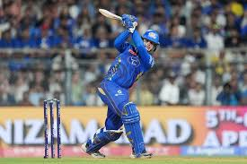
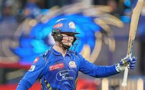
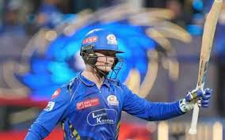
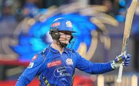
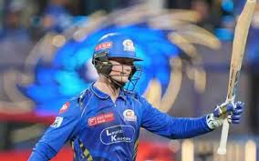

Gallery

 


Aggressive South African wicket-keeper batsman with an impressive domestic record.
Ryan Rickelton is a talented left-handed wicket-keeper batsman from South Africa, known for his attacking mindset at the top of the order. His impressive strike rate and calm temperament under pressure make him a solid option for Mumbai Indians. He adds depth and flexibility to MI’s overseas player combinations.
